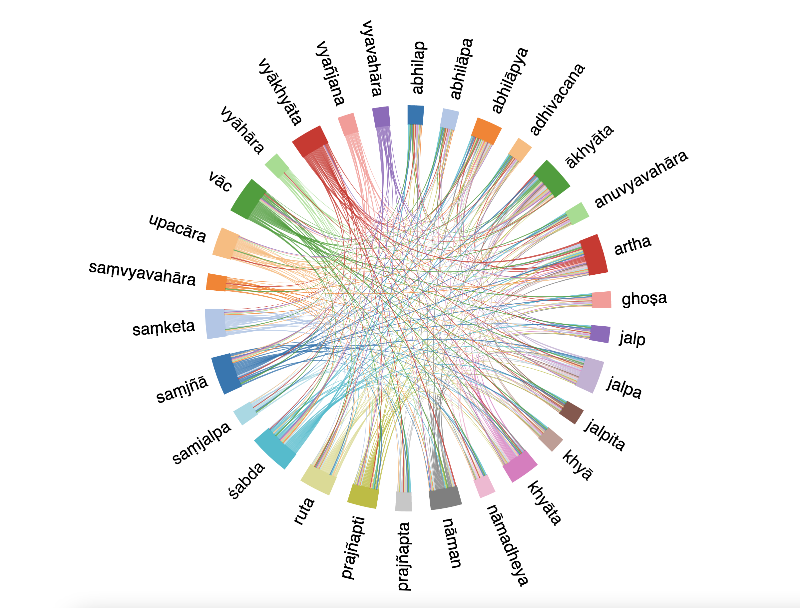

Lexical Portraits
in-depth analysis of core Buddhist Sanskrit vocabulary
31/03/2022

0.1 Preface
Lexical Portraits are a series of in-depth analysis of core Buddhist Sanskrit vocabulary launched by the Buddhist Translators Workbench in 2021, as part of the lexicographic programme run by the Mangalam Research Center.
Each portrait is meant to be perused in conjunction with the corresponding entry in the Visual Dictionary and Thesaurus of Buddhist Sanskrit. The dictionary entry offers the possibility of interactively exploring our manually annotated citations for a headword, while the portrait offers our own interpretation of those citation and corpus data. Portraits’ narrative sections and data-visualizations are tailored to each lemma, we recommend to always check the info tabs that accompany the graphs, as the statistics and principles used to generate the graphs may vary from headword to headword.
More information about the editorial strategy and theoretical underpinnings of the Lexical Portraits series can be found in Lugli 2021.
0.1.1 coverage
The vocabulary we intend to cover in our Lexical Portrait is a subset of the headwords we are going to cover in the Visual Dictionary and Thesaurus of Buddhist Sanskrit. We prioritize words that are relatively frequent in the corpus, difficult to translate, and lexicalize important concepts in Buddhism.
0.1.2 team
The portraits are created by Ligeia Lugli on the basis of linguistic annotations by Luis Gamaliel Quiñones Martinez and Bruno Galasek-Hul.